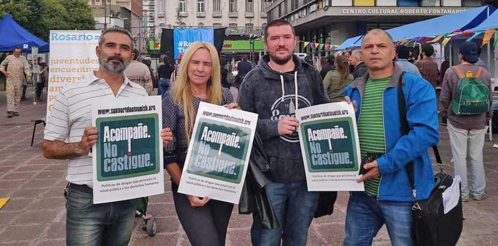

ARDA
¿Quienes somos?
ARDA es una organización de alcance nacional que desde 1999 agrupa a profesionales del ámbito sociosanitario, del derecho y las ciencias sociales y se propone contribuir a la difusión e implementación de políticas públicas que tiendan a la reducción de daños en materia de uso de drogas.
Los orígenes de nuestra organización se remontan a mediados de los años ‘90, momento de apogeo de las políticas abstencionistas-prohibicionistas incrementadas en la argentina desde la implementación de la Ley de Drogas 23.737. En ese momento, algunos profesionales que conocían las políticas que se llevaban a cabo en algunos países europeos para enfrentar la pandemia de VIH y atentos a los daños de la implementación de la Ley de Drogas que comenzaban a hacerse visibles, deciden fundar la Asociación.
Pionerxs en la oposición abierta y pública a la Ley 23.737, hemos realizado acciones en todos los ámbitos de intervención posibles. En el transcurso de nuestras actividades hemos formado a profesionales y promotores que se desempeñan con usuarios de drogas en educación, salud, organizaciones sociales, ámbito penitenciario, recreativo, etc. Nuestros miembros impulsaron la creación de los primeros servicios que trabajan desde la perspectiva de reducción de daños, como lo son el Centro Carlos Gardel de la Ciudad de Bs. As. y el Centro Agudo Ávila de la ciudad de Rosario. Participamos en la producción de diversos proyectos de ley sobre despenalización de la tenencia de drogas, en la organización de marchas por la despenalización del cannabis, en la confección de protocolos de la Corte Suprema de Justicia Nacional, publicamos más de 20 libros, realizamos intervenciones preventivas en eventos masivos como Creamfields, Cosquín Rock, Fiesta Nacional de la Cerveza, etc.
El mundo necesita una política de drogas más efectiva, justa y, sobre todo, más humana.